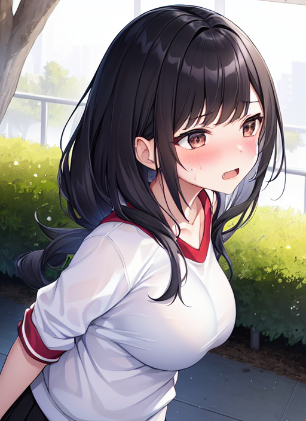

体育祭の朝
10月のある日曜日の早朝、会社員の瀬戸あつきはジョギングで緑地公園まで来ていた。
「いつもは仕事で全然運動ができないし、こうやって日曜日に運動しないとからだがなまっちゃうからな。」
運動不足解消のために、毎週日曜日はジョギングをすることを決めているようだ。
公園でからだを動かしていると、あつきの目の前を体操服を着た少女が通り過ぎた。
「あの子、かわいいな…♪」
思わず少女に見とれてしまうあつき。
「たぶん中学生くらいだろうけど、それにしてはあの胸の大きさはスゲーな。うらやましいな～。」
そう呟くあつきだった。
すると、通り過ぎた少女がなぜかあつきのところまで戻ってきた。
「お兄さん。わたしのこと、エロい目で見てたでしょ。」
少女に問い詰められて言葉を詰まらせるあつき。
「い、いや、そ、そういうわけじゃ…。」
「胸の大きさがスゲーって言ってたの、聞こえてたからね…。」
「えっ！？ マジで！？」
「うん。だから、覚悟してね。」
「…えっ？」
少女の言葉に、あつきはゾクッとした。
その途端、あつきのからだに異変が起きた。 短く切られた髪はグッと肩くらいの長さまで伸び、美しいロングヘアとなった。 顔も丸々とした小顔に変わり、顔のパーツもかわいらしいものになった。 身長も180から160まで縮み、筋肉質のからだはしまいに細くなり、手足ともにスベスベした肌になった。
「な、なんだよ…？」
自分のからだの異変に言葉を詰まらせるあつき。 しかし、変化はまだまだ続いた。 男性の象徴だったものが消え、代わりに胸とお尻が風船のように膨らみ、少女と同じくらいの大きさになった。
「うそ、わたしに胸が…！？」
からだの変化にともない、ついにあつきの声は男声から女声に変化してしまったらしい。
「さあ、仕上げに入るかな。」
そう少女が言ったとき、あつきの服に変化が起きた。 着ていた黄緑のランニングウェアは白の体操服に変わり、胸元に中学校の校章と「榊原瑠花」と書かれた布が縫われた。 穿いていた黒のトレパンは、 裾が短くなり紺色のものになった。 靴は、紺色のランニングシューズから白の通学シューズになり、靴下も白のものに変わった。
「はい、これでおしまいっと。」
ようやくあつきのからだの変化が終わった。 しかし、そこには体操服を着た女子中学生がいたのだ。
「そ、そんな、わたしは中学生になっちゃったの！？」
自分の変わった姿にショックを受けるあつき。
「女子中学生になって、どうかし ら？」
「元に戻りたいよ…。」
「ダーメ。今日は、このあとうちの中学校でやる体育祭に出てもらうからね。」
「そ、そんな…。」
「ちなみに、あなたはわたしの双子の妹になったからね♪」
「ええっ！？」
こうして、瀬戸あつきは体操服の少女である榊原淳子によって、女子中学生の榊原瑠花に生まれ変わり、中学校の体育祭に出場するはめになった。 最初のうちは嫌々だった瑠花も、いざ出場してみるとおもしろいと感じ、結果榊原姉妹のクラスは１位となった。 その後、あつきとしての記憶は完全になくなり、現在は榊原家の家族として仲良く暮らしてるのであった。
「お姉ちゃん。デパートへ買い物に行かない？」
「いいね♪ それじゃ、行こうか♪」